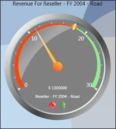
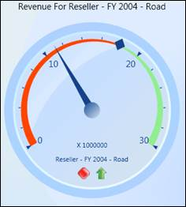
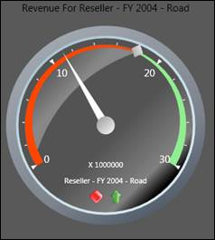
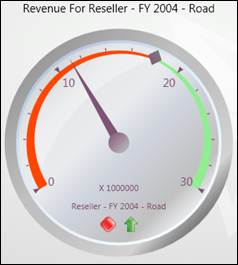
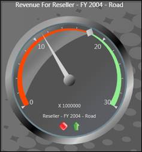
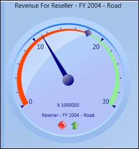
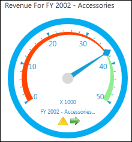
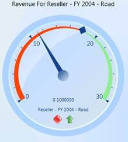

The OLAP Gauge control allows you to present your data using different built-in-skins. These skins allow you to theme and style the look and feel of the control in various rich color schemes. You can use Skin Manager Framework to apply a wide range of skins to the Essential OLAP Gauge. These skins have been designed to suit the needs of a wide range of audience. The following are the types of skins available:
· Default -The visual style of this skin depends upon the operating System used.
· Office2007Blue -This skin is similar to the Microsoft Office2007Blue skin.
· Office2007Black -This skin is similar to the Microsoft Office2007Black skin.
· Office2007Silver -This skin is similar to the Microsoft Office2007Silver skin.
· Office2003Blue -This skin is similar to the Microsoft Office2003 skin.
· Blend -This skin is similar to the Microsoft Blend skin.
· Metro -This skin is similar to the Windows 8 Metro Style.

Figure 22: Default Theme

Figure 23: Office2007Blue Theme

Figure 24: Office2007Black Theme

Figure 25: Office2007Silver Theme

Figure 26: Blend Theme

Figure 27: Office2003Blue Theme

Figure 28: Metro Theme
Applying Skins
The various skin themes available can be applied to the control using the SkinStorage.VisualStyle property.
To set the visual style for the controls, use the code given below.
|
[XAML]
<!—To set Office2007Blue visual style for OLAP Gauge--> < gauge : OlapGauge Name ="olapGauge1" Radius ="120" syncfusion : SkinStorage.VisualStyle ="Office2007Blue"/> |
|
[C#]
//To set Office2007Blue visual style for Olap Gauge SkinStorage .SetVisualStyle(olapGauge1, "Office2007Blue"); |
|
[VB]
'To set Office2007Blue visual style for Olap Gauge SkinStorage .SetVisualStyle(olapGauge1, "Office2007Blue"); |
Run the code. The following output is obtained.

Figure 29: Office2007Blue Theme
Sample Location
A sample demo is available at the following location:
..\Syncfusion\EssentialStudio\<Version Number>\BI\WPF\OlapGauge.WPF\Samples\Gauge Customization\Customization Demo\